The Multilevel preconditioners implemented in MLD2P4 are obtained by combining AS preconditioners with coarse-space corrections; therefore we first provide a sketch of the AS preconditioners.
Given the linear system ,
where
 is a
nonsingular sparse matrix with a symmetric nonzero pattern,
let 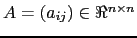 be the adjacency graph of
is a
nonsingular sparse matrix with a symmetric nonzero pattern,
let 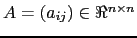 be the adjacency graph of  , where
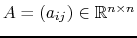
and
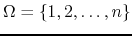 are the vertex set and the edge set of 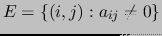,
respectively. Two vertices are called adjacent if there is an edge connecting
them. For any integer 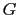, a 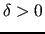-overlap
partition of 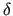 can be defined recursively as follows.
Given a 0-overlap (or non-overlapping) partition of ,
i.e. a set of 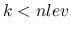 disjoint nonempty sets
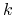 such that
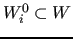, a -overlap
partition of is obtained by considering the sets
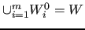 obtained by including the vertices that
are adjacent to any vertex in
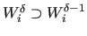.
, where
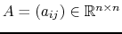
and
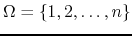 are the vertex set and the edge set of 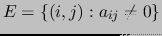,
respectively. Two vertices are called adjacent if there is an edge connecting
them. For any integer 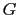, a 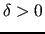-overlap
partition of 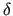 can be defined recursively as follows.
Given a 0-overlap (or non-overlapping) partition of ,
i.e. a set of 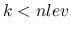 disjoint nonempty sets
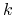 such that
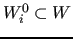, a -overlap
partition of is obtained by considering the sets
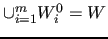 obtained by including the vertices that
are adjacent to any vertex in
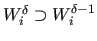.
Let 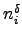 be the size of 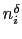 and
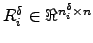 the restriction operator that maps
a vector 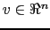 onto the vector
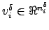
containing the components of 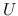 corresponding to the vertices in
. The transpose of 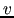 is a
prolongation operator from
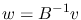 to 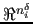.
The matrix
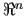 can be considered
as a restriction of  corresponding to the set 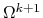.
corresponding to the set 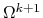.
The classical one-level AS preconditioner is defined by

A variant of the classical AS preconditioner that outperforms it
in terms of convergence rate and of computation and communication
time on parallel distributed-memory computers is the so-called Restricted AS
(RAS) preconditioner [5,13]. It
is obtained by zeroing the components of corresponding to the
overlapping vertices when applying the prolongation. Therefore,
RAS differs from classical AS by the prolongation operators,
which are substituted by
 ,
where 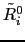 is obtained by zeroing the rows of 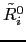
corresponding to the vertices in
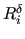:
,
where 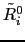 is obtained by zeroing the rows of 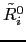
corresponding to the vertices in
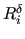:

As already observed, the convergence rate of the one-level Schwarz
preconditioned iterative solvers deteriorates as the number of partitions
of increases [7,20]. To reduce the dependency
of the number of iterations on the degree of parallelism we may
introduce a global coupling among the overlapping partitions by defining
a coarse-space approximation 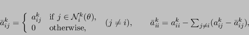 of the matrix  .
In a pure algebraic setting, is usually built with
the Galerkin approach. Given a set 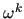 of coarse vertices,
with size 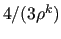, and a suitable restriction operator
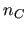, is defined as
.
In a pure algebraic setting, is usually built with
the Galerkin approach. Given a set 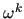 of coarse vertices,
with size 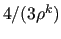, and a suitable restriction operator
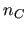, is defined as
The combination of 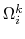 and may be
performed in either an additive or a multiplicative framework.
In the former case, the two-level additive Schwarz preconditioner
is obtained:
In the multiplicative case, the combination can be
performed by first applying the smoother and then
the coarse-level correction operator :
As previously noted, on parallel computers the number of submatrices usually matches the number of available processors. When the size of the system to be preconditioned is very large, the use of many processors, i.e. of many small submatrices, often leads to a large coarse-level system, whose solution may be computationally expensive. On the other hand, the use of few processors often leads to local sumatrices that are too expensive to be processed on single processors, because of memory and/or computing requirements. Therefore, it seems natural to use a recursive approach, in which the coarse-level correction is re-applied starting from the current coarse-level system. The corresponding preconditioners, called multi-level preconditioners, can significantly reduce the computational cost of preconditioning with respect to the two-level case (see [20, Chapter 3]). Additive and hybrid multilevel preconditioners are obtained as direct extensions of the two-level counterparts. For a detailed descrition of them, the reader is referred to [20, Chapter 3]. The algorithm for the application of a multi-level hybrid post-smoothed preconditioner to a vector , i.e. for the computation of , is reported, for example, in Figure 1. Here the number of levels is denoted by and the levels are numbered in increasing order starting from the finest one, i.e. the finest level is level 1; the coarse matrix and the corresponding basic preconditioner at each level are denoted by and , respectively, with , while the related restriction operator is denoted by .